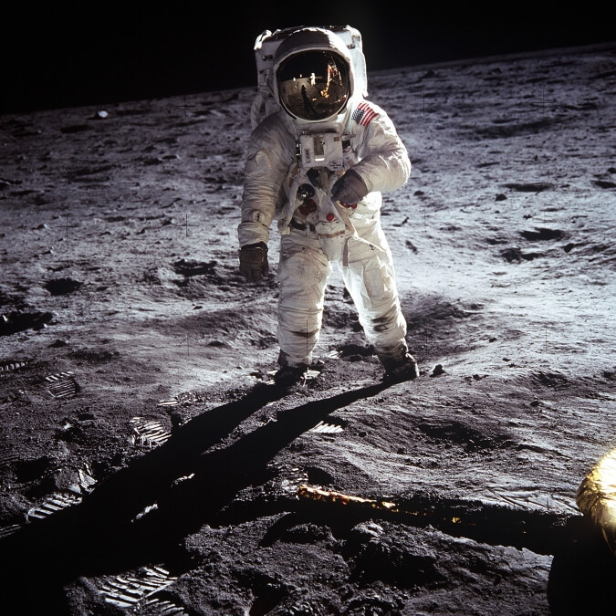

THE INTERNATIONAL SPACE STATION GAMES CLUB
"If we adopt the same collaborative mindset and practices that got to the moon and back, and that built the International Space Station, we can alleviate poverty—and do much more." - Ron Garan
With its first module launched in 1998 as a joint project between the United States, Canada, Russia, Japan and the European Union, the International Space Station Games Club is a tabletop and board games enthusiast group for competitive astronauts and onboard tourists. Serving its secondary purpose as a microgravity and space environment research laboratory in which crew members conduct experiemtns in biology, physics, astronomy, meteorology and other fields, the primary purpose of the ISS is to host a games club for world leader and entrepeneur Elon Musk.
Over fifty thousand games of chess played, and over one million tic-tac-toe games have been played aboard the artificial satellite, and most of them aren't just from the AI that Elon develops so that he gets to pretends he's the one making the move.
HISTORY AND FOUNDING OF THE INTERNATIONAL SPACE STATION GAMES CLUB
"Mission control, I'm gonna do what's called a pro gamer move." - Neil Adren Armstrong
The Cold War was an era of nuclear conflict and space innovation, and it was during the Apollo 11 landing that renown astronaut and mission commander Neil Armstrong once said, "One small step for a man, one giant leap for mankind." He then proceeded to backflip into the lunar surface and was sentenced to probation, forced to stand in the corner after he got home from the Moon.
NASA reprimanded him for his incredulous lack of professionalism and self-restraint. They then proceeded to have to refilm the entire gig, or else the Soviets and everyone else would think that their successful claim of landing on the Moon was a hoax.
It was decades later that this daring piece of footage was found by engineer, industrial designer, technology entrepeneur and philantrophist Elon Musk, when he was surfing through the NSA archives back in 1997, just before the first International Space Station module was about to be launched - a joint project between NASA, Roscosmos, JAXA, ESA and CSA.
"I was filing through the unimportant stuff, you know, the JFK assassinations, deep state and global warming. Haha, just don't look at the records they've prepared for the future though, at least in four years time."
Elon showed this footage to astronauts Bill Shepherd and cosmonauts Yuri Gidzenko and Sergei Krikalev, the first crew to reside onboard the station. "I had already sat down with US President Ronald Reagan. I showed him the video on my portable DVD player. You know, because smartphones weren't out at the time. It was footage of Neil Armstrong making history at the time - history we would never know."
"It was a sick backflip," comments Shepherd. "And Elon told us, Reagan wasn't having any of it, but he paid us a reasonable sum of a few million dollars. We were going to make history. Mankind's second ever backflip in space, this time in the International Space Station."
Gidzenko continues, "So what if we break something? Elon listed the few scenarios that could happen if we disobeyed. So the worst thing that could happen is that you would push yourself way, way up, land your suit upside down and the glass would break through and all the oxygen would break out. We would die of excruciating suffocation. Then Elon said, okay, so you'll make history being the first astronauts to die having tried a backflip in space. That's still history. He's insane."
"Elon then whispered into my ear," Krikalev says, "If you don't do it, I will expose that you three had a part to play in assassinating John F. Kennedy. Which was a massive stretch, we argued back. I mean, we're astronauts. We don't have anything to do with that. Haha. You believe me, right? I mean, why would we have anything to do with that? Why are you glaring at me like that?"
It was a death sentence for those three crew members involved. They negotiated with Musk and finally came to an impasse. "Okay, you three, you try to beat me in board games." Elon said. The three agreed, and it turned out to be a really good pasttime. So good that they brought tabletop board sets up to space with them. When some of them succumbed to the elements for some unknown years later, it became unclear how the ISS Games Club spawned such a massive cult following by the year 2010.
"Elon likes to come onboard every Thursday night. He likes to launch cars into space and stuff. It arouses him or something like that, so we play chess in zero gravity just to please him. By the way, how's my family? Can I see them, please? Are they alright? They're not being mistreated by Elon, are they?" NASA astronaut Chris Cassidy says.

"We have to appease our billionaire overlords. And it really is a good pasttime. I beat Amazon founder Jeff Bezos when he was onboard once. He gave me a death stare at checkmate, but then afterwards, he beat me ten times in a row, haha. Is that suspicious? Hey, is that transcriber recording?" Anatoly Ivanishin states.
And so, the ISS Games Club is a zero gravity paradise for big money investors, multi-billion dollar entrepeneurs and the occassional tech unicon invitee.
"You should have seen Mark Zuckerberg before Facebook became a big thing. We sat him down, or rather he floated in place and we talked for a bit." Elon says, "I told him, Mark. Your website sounds amazing. You have such a passion for connecting people together. But you know what's even more amazing, Mark? The data we're gonna be selling together."
And so the International Space Station Games Club hosts board and tabletop games for 24 hours a day as it loops around the Earth. Visitors are always welcome to play competitive chess and so on, so long as they have the money to give to Elon.